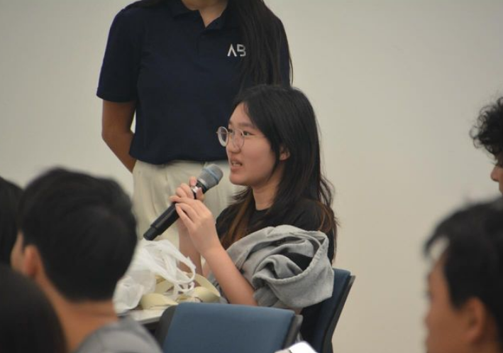
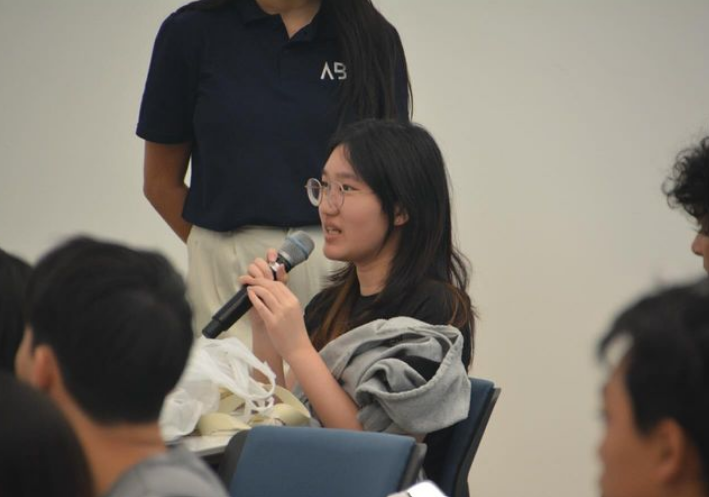
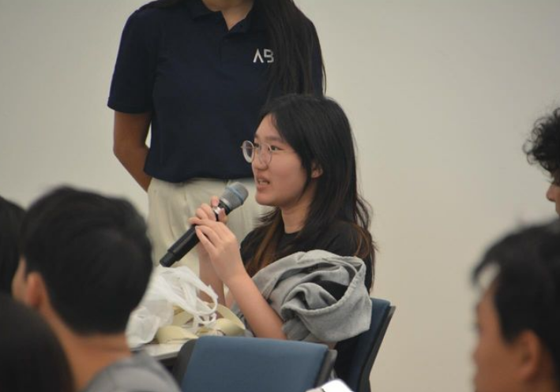

Spread the Music Association is a musical non-profit that brings together classical and traditional Chinese music students. I was the former vice
president and a member for the past 9 years. SMA often visits local festivals, libraries, and nursing homes in order to spread the joy of music and Chinese culture.
We host yearly summer benefit concerts at the local church that habitually raise thousands of dollars toward charity, with our largest year amounting to over 10,000 dollars in
donations toward Girl Up, a foundation dedicated to funding education in rural villages for young, underpriveleged girls. Visit the SMA website HERE!
Asian Business Society

I am currently an event planning officer for the TAMU Asian Business Society. Every year we help young students with personal and career development.
We also participate in service events such as the local canned food drive and Big Event, where we had 3 registered groups help out with community work.
This is the first year we are participating in volunteer football concessions to raise money for our developing organization!
Visit the TAMU ABS Instagram HERE! Visit the TAMU ABS LinkedIn HERE! Check out the TAMU ABS Website HERE!

 
